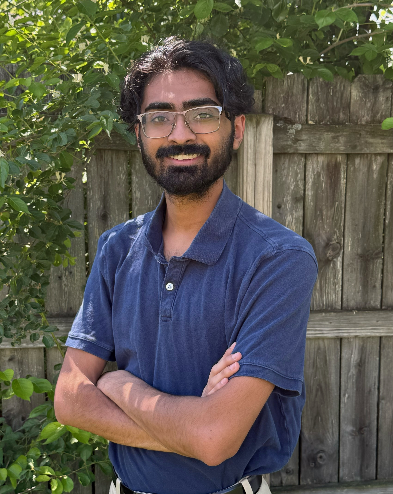

About Me
I am a Mechanical and Aerospace Engineering student at the University of Florida driven by a simple goal: to become the kind of engineer who can take an idea from concept to analysis, manufacturing, testing, and real-world use.
My experience spans hands-on manufacturing, CAD and simulation work, digital engineering, and technical communication. I have developed practical engineering skills through ACE CNC training, my valveless pulsejet engine project, my role as a Design and Manufacturing Lab Teaching Assistant, my involvement with Gator Motorsports, and my internship experience with NextGen Federal Systems.
I have also gained professional exposure through NextGen Federal Systems and my upcoming work with Northrop Grumman Mission Systems, where my interests in aerospace, defense, digital engineering, and mission-focused technology continue to grow. I am always looking for opportunities to learn from experienced engineers, take on hard problems, and contribute to work that has real impact.

Projects, Internships, and Lab Work
Valveless Pulsejet Engine
Designed and analyzed a Lockwood-style valveless pulsejet concept using CAD, SolidWorks Flow Simulation, and MATLAB.
Tools: SolidWorks, CFD, MATLAB
Lab WorkMechanics of Materials Lab
Completed experimental lab work focused on material behavior, stress, strain, failure modes, and engineering data analysis.
Tools: lab testing, data analysis, technical writing
InternshipNextGen Federal Systems
Supported digital engineering work involving digital twins, MBSE diagrams, STK scenarios, and technical documentation.
Tools: STK, MBSE, digital twins, documentation
InternshipNorthrop Grumman Mission Systems
Engineering internship experience in a professional aerospace and defense mission systems environment.
Tools: engineering systems, documentation, technical problem solving
ProjectACE Air Engine
Hands-on mechanical design and manufacturing project involving an air-powered engine assembly and component-level engineering work.
Tools: machining, assembly, mechanical design
Lab WorkDML Teaching Assistant
Supported students in a design and manufacturing lab environment through hands-on technical guidance, equipment support, and engineering instruction.
Tools: manufacturing, teaching, lab support
Resume
My resume will be available here as a PDF.
View ResumeContact
Email: aakashyap05@gmail.com
LinkedIn: linkedin.com/in/aakashyap05